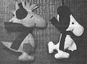
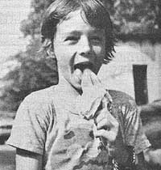

THE Mother Earth News", P.O. Box 70, Hendersonville, N.C. 28791
If you now operate, or have ever operated, a successful home business that was inspired by an article you read in MOTHER, tell us (in about 500 words) when and where-and with how much "seed money"-you started your venture. Because if your story can be fitted into an upcoming installment of BOOTSTRAP BUSINESSES, you'll receive [1] the warm satisfaction of knowing that you helped someone else find the happiness you enjoy and (2) a free two-year new or renewal subscription to THE Mother Earth News (restricted) .
On a hot, sultry August night in 1968 I came to the realization that I needed a new challenge. "We've got to get a hobby," I said to my wife. "And, considering the way prices are rising, it'd be nice if we could find one that'd bring in some cash!" Well, Kathy (a home economics instructor) was interested in both sewing and knitting, and I (a draftsman) liked to draw and work with my hands. So we figured we ought to be able to come up with an activity that could involve us both.
Our first project was creating Barbie Doll dresses and Barbie-sized racks and wardrobes. With only $10 in seed money we bought yarn, thread, Barbie patterns (two, at 50! apiece), fabric scraps, and craft magazines ... and soon Kathy was selling our handiwork.
Unfortunately, we learned the hard way that a good craft business doesn't grow overnight. We collected a total of only $100 during the first two years of our hobby. That sum went back into the business, of course, and we added knitted items, refrigerator magnets, and Christmas tree ornaments to our line of products. And, while we were diversifying, we started reading THE Mother Earth News (restricted) ": Articles like "How to Make $1,000 a Week Making Candles" (in MOTHER NO. 11, page 67), for instance, gave us hope that our part-time recreational activity might someday earn us enough money to let us spend more time at it. So we kept right on working, and enjoying our somewhat profitable pastime . . . in years three through six of our enterprise we earned about $500 annually.
But then we really started using our heads. We dropped 95% of all our craft production except for our felt and calico Christmas tree ornaments . . . which we increased by 100%. We had found our specialty, and we proceeded to get better at it pretty quickly. We also picked up some tips from "How to Start and Run a Profitable Craft Business" in MOTHER NO. 50 (page 50), and our husband-and-wife enterprise began to get up steam. We first placed holiday ornaments in local craft shops on a consignment system. Then-as the stores ordered more and more items-we began to work strictly on a "cash on delivery" basis . . . and now we have to turn orders away. Our annual investment is up to $800, but last year (our twelfth in the craft business) we grossed over $5,000!
The most important piece of advice Kathy and I can offer aspiring craftspersons is this: Stress quality, not quantity: Excellence is what real craft lovers are after! It's our belief that our emphasis on making the best products we can has helped our bootstrap business grow.
Lee & Kathy Mathwig
Sheboygan Fails, Wis.
Years ago, while traveling with my serviceman son, I made friends with a goodly number of his buddies' children. The youngsters came to refer to me as "Grandma", and we often grew so close that I'd write to them after their families were transferred.
Later I moved to a farm that's situated 30 miles from the nearest town . . . where I soon had a fine family of farm animals, including an assortment of cats and dogs, a goat named Pandora, and a beautiful white rabbit that goes by the name of Elephant. But I was still Grandma to a lot of those youngsters I'd started corresponding with.
Well, I was looking for a way to supplement my income at home when I happened across Steve Brown's article, "You Can Start Your Own Publishing Business", in MOTHER NO. 38 (page 86). After I read that piece, I thought about how much fun it would be to publish something I had written myself . . . and I thought about the ever-present pile of to-be-answered letters from adopted grandchildren on my desk . . and I thought about all my wonderful, funny animal friends ... and then all those notions kind of added up in my brain. The result was Notes From Raggedy's Mailbox, a monthly newsletter for children . . . which is from "Grandma", and all about life on the homestead. Just $70 got it going: $15 for advertising, $40 for printing and another $15 for postage.
Now I'm grossing about $60 a month (and the amount is steadily increasing), "Raggedy's" circulation is growing, and the population of animals that make up the newsletter's cast of characters is thriving. If your child would like to get to know a goat that "rides" a motorcycle, a pig that rubs against your leg like a cat, a herd of goats that come running like dogs when they're called, and a nice farm woman named "Grandma" who feeds and waters them all . . . send $10 for a year's subscription-or $1.00 for a sample copy-to:
Phyllis Bowen
Raggedy Ranch
Dept. TMEN
R.R.
Woodbine, Kan. 67492
Working 50 hours and more a week-with no overtime pay and no chance of advancement-gradually became too grim a situation for me to be satisfied with. I was chief draftsman for a steel fabrication shop, and I liked my work . . . but not my job. Then, in November of 1978, I read "Mother Types at Home" by Marsha K. Strong (in MOTHER NO. 54, page 801, and although I'm no good at typing and certainly not a mother, this article gave me the inspiration I needed to start an "at home" business
I'm now running my own drafting service, working chiefly for engineering firms and fabricators (including my former employer) Most of my jobs to date have come from the phosphate, citrus, and tourist industries of central Florida. I've also made drawings for the new Orlando International Airport and for Wait Disney World, and traveled as far away as Escanaba Michigan . . . where I mapped out a dust collection system for a transportation company.
My most productive advertising is by word of mouth. On almost every job, I meet someone else with a "little project" requiring drawings ... so it seems that I've finally been able to combine the work I love with a "job" I enjoy.
Since I'd been drafting for a number of years before I started my own enterprise, I already had most of the reference books and some of the tools that I needed. But I didn't have the kind of equipment that a company usually provides, such as a blueprint machine and office furniture. I purchased such items, used, from business people in my area (most of those folks really seemed to want the newcomer to succeed!), and I'll continue buying equipment as the need arises, of course . .. but my initial investment came to less than $1,000.
After four months of running my company, I find that I put in fewer hours than I used to, and -though I'm not yet earning more money than in my former job-I'm working for myself, I enjoy my labor a whole lot more, and I still gross $8.75 an hour, plus expenses!
Earl F. Coell Mount Dora, Fla.
Since I enjoy a job that gives me a chance to meet a lot of people-especially youngsters-it seemed natural for me to start a summer bootstrap business operating a bell-ringing ice cream truck. And "How to Go to Work for Yourself" in MOTHER NO. 52 (page 36) gave me just the push I needed to get that wagon rolling.
Before I went to work, however, I had to purchase a vehicle to haul my frozen delicacies around in. I bought a 1963 Chevy van for $200, and spent $200 more to paint my truck, put a window into its curb side to sell from, and install a set of burglar alarm bells to provide my "come and get it" ring (which turned out to be the only advertisement the traveling ice cream store ever needed). Then I got clearance from the local board of health, purchased a seller's license for about $50, and headed for the ice cream supplier . . . who lent me a good freezer and-for less than $50-furnished me with a selection of his 12 most popular frozen desserts. (Decide on the quantity according to how much you think you can sell and how much you can afford to buy. If you're starting out with minimal funds, you can always go back to the supplier after you've sold enough of the tasty treats to build up your stock of cash.)
Then I headed out and started working up my route (it's important to establish a regular itinerary as quickly as possible). I went to factories, service stations, and business places-trying to hit each at the most strategic time of day and, after school hours, to residential areas. It doesn't take long to loam which locations are worth returning to and which should be dropped. And you'd better believe that one of the best ways to draw a crowd is to keep those truck bells constantly ringing!
Being an ice cream man isn't an easy job: The hours are long, and the work requires a goodly portion of self-discipline (after all, there's a constant temptation to "eat into" your profits). But it has netted me as much as $100 a day . .. and given me many a dose of sunshine from happy children's faces!
Tom Deverin Floyd, Va.
|
 |
 |
|